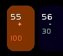
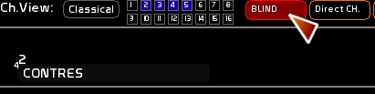
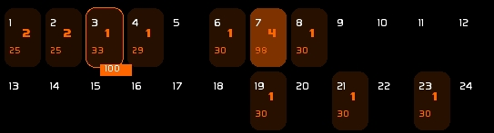
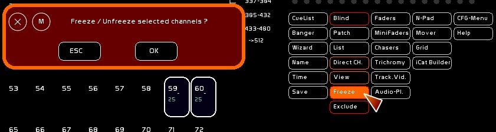
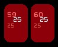
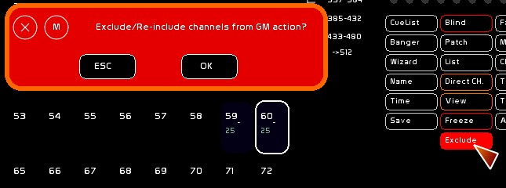
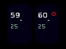

Table des matières
MANIPULATIONS DE CIRCUITS
Que vous soyez en mode [Classical] ou [Channel Views] toutes ces manipulations sont valables.
Sélectionner un circuit:
- à la souris:
Pour sélectionner / déselectionner un circuit, clicker dessus.
- au clavier:
Sélection : Taper le numéro de circuit puis la touche [+].
Déselection: Taper le numéro de circuit puis la touche [-].
! noter que toute chaine de caractères en cours de frappe est affichée dans la fenêtre de retour d'infos. Ici **145**.
! noter que le circuit 21 a été appelé et est donc notifié: **Last Channel Selected: 21**.

- La syntaxe polonaise d'appels de circuits et d'intensités, peut être aussi utilisée avec écran tactile, en utilisant le Num-Pad ( clavier numérique virtuel).
Donner une intensité lumineuse aux circuits sélectionnés
- à la souris:
Monter la molette de la souris.
Si vous êtes en mode pourcentage, les circuits sélectionnés augmenteront de 1%. Si vous êtes en mode Dmx, il augementeront de 1 pas dmx.
- au clavier:
Taper l'intensité voulue puis la touche [ENTER].
! Raccourci clavier AT FULL: touche [I] ! Raccourci clavier AT ZERO: touche [O] Y penser comme ON / OFF ( I/O ) sur les interrupteurs ;-)
- clavier et souris:
Taper l'intensité voulue puis clicker [AT].
- roue de niveau:(voir le Num-Pad )
Cette roue de niveau se pilote en midi.
Déselection générale
Vous pouvez déselectionner tous les circuist sélectionné en une seule fois:
- à la souris:
Clicker [ESC]
- au clavier:
Taper la touche d'échappement: [ESC]
Cette fonction est importante car elle nettoie aussi la chaine de commandes.
Next Channel
Les touches [GAUCHE] et [DROITE] permettent de sélectionner le circuit précédent, ou le circuit suivant.
[CTRL][GAUCHE] ou [CTRL][DROITE] envoient le circuit à Full.
Si la fenêtre de Patch est ouverte, les gradateurs affectés à ce circuit seront sélectionnés.
Sélections Multiples
Sélectionner tous les circuits allumés
- à la souris:
Clicker [ALL].
- au clavier:
Taper la touche [Y]
Sélection inversée: sélectionner tous les circuits allumés mais non sélectionnés
- à la souris:
Clicker [INV].
- au clavier:
Taper la touche [U]
Sélection chainée: sélectionner une suite de circuits concomittants
- à la souris:
Sélectionner le premier circuit de la sélection.
Clicker [TO], ce dernier reste allumé. Sélectionner le dernier circuit de la sélection.
- au clavier:
Appelez et sélectionnez un circuit : [1][2] [+]
Tapez le numéro du dernier circuit de la sélection: [1][8] puis la touche [TAB]
Les circuits de 12 à 18 sont sélectionés.
Faire un noir sec et tout déselectionner
Cette fonction est surtout utile pour nettoyer son espace circuit lors d'un encodage.
- à la souris:
Clicker [BlackOut]
* au clavier:
Taper [F12]
Copier Coller des circuits
les circuits peuvent être copiés et collés sur scène ou en préset (mode BLIND, ou si on veut le buffer de la mémoire à venir)
- à la souris, depuis le num-pad:
sélectionner les circuits désirés
clicker [COPY] pour copier en mémoire clicker[PASTE] pour coller de la mémoire vers le buffer choisi ( sur scène, ou vers BLIND)
- au clavier ( vers la scène ou le Blind):
[CTRL][C] pour copier en mémoire
[CTRL][V] pour coller de la mémoire vers le buffer choisi ( sur scène, ou vers BLIND)
! Sur scène on peut copier en mémoire les valeurs des circuits appelées au clavier, mais aussi celles issues des Masters ( en orange).
! En Blind, seules les valeurs issues du Blind pourront être copiées en mémoire.
Rappeler des circuits d'une autre mémoire ( GET )
- au clavier ( vers la scène ou le Blind):
Sélectionner les circuits
Taper le numéro de mémoire
[CTRL][G]
Information par circuits sur la mémoire en preset
Un circuit dont l'intensité va monter dans le BLIND se voit affecter d'un petit +. A l'inverse, un circuit dont l'intensité va descendre dans le preset se voit affecter d'un petit -.

Manipulations en aveugle
le buffer BLIND
Accéder à BLIND: vous pouvez accéder en clickant [BLIND] depuis les grandes commandes en haut à droite ou en tapant [CTRL-F11].

Le buffer BLIND est l'endroit où est stockée l'état des 512 cicruits dans la mémoire à venir lors du prochain crossfade. On peut aussi l'appeler Preset.
C'est un espace où l'on peut manipuler comme vu dans cette page, tous les 512 circuits. Le résultat n'apparait pas sur scène, car il est fait dans le Preset, donc en aveugle.
Si vous ne travaillez pas avec le séquentiel, le buffer BLIND vous interressera pour créer des masters en aveugle.
Accéder au Patch
voir le Patch
View, un mode particulier
- VIEW est un mode qui permet au survol d'un conteneur ( dock de Fader, dock-color, mémoire, dock-tracker) d'en afficher le contenu. Il permet aussi d'afficher de qui est issu le niveau le plus haut concernant les circuits manipulés par les masters.
Clicker [VIEW] ou taper au clavier []

On peut voir sur l'image:
-en encadré le contenu du dernier dock survolé, avec son intensité en étiquette.
-que les circuits 1 et 2 sont contrôlés par le Master 2, les circuits 3,4,6,8,19,21,23 issus du Master 1, le circuit 7 issu du Master 4.
-View affiche quel Fader donne son plus haut niveau aux circuits.
! Un même circuit peut être contrôlé par différents Faders, seul le niveau le fader qui lui donne son niveau le plus haut sera affiché.
BlackOut
En tapant [F12]
- vous faites un noir complet de tout ce qui est sur scène, issu du séquenciel.
- si vous êtes en BLIND, vous effacez tous les circuits de la mémoire à venir.
Geler l'état des circuits
Il est possible de bloquer à un niveau précis une sélection de circuits ( projecteur mal serré se détournant dans le public, erreur d'encodage, …).
- Sélectionner les circuits à geler
- Le niveau gelé est le plus haut niveau trouvé entre le buffer du séquenciel et le buffer des faders.
- Clicker [Freeze] et confirmer
- Si la sélection est déjà gelée, elle sera dégelée.

Un circuit gelé apparait avec un clignotement rouge, le niveau où il est gelé apparait en blanc, en étiquette.

Exclure des circuits de l'action du Grand Master
On peut exclure de l'action du Grand Master une sélection de circuits ( changeurs de couleurs en concert, bleus, etc…).
- Sélectionner les circuits à exclure de l'action du Grand Master
- Clicker [Exclude] et confirmer
- Comme pour Freeze, si la sélection est déjà exclue, elle sera réintégrée dans l'action du Grand Master.

Un circuit exclu du Grand Master apparait avec un petit cercle rouge en haut à droite.
